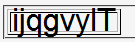
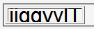

line-heightプロパティで小さい値を指定するなどしてテーブルセルの高さを低くしたとき、セルのボックスをはみ出す部分が表示されない。
<table border="1"> <tr style="font:2em Arial,sans-serif; line-height:0.5;"> <td>ijqgvylT</td></tr> </table>
| ijqgvylT |
tr要素は行高さを文字高さの半分にしています。
Moz1.3での表示（標準モード）
Opera7.03での表示（標準モード）
Opera7.03では標準・互換モードの両方で不具合の発生が確認されました。